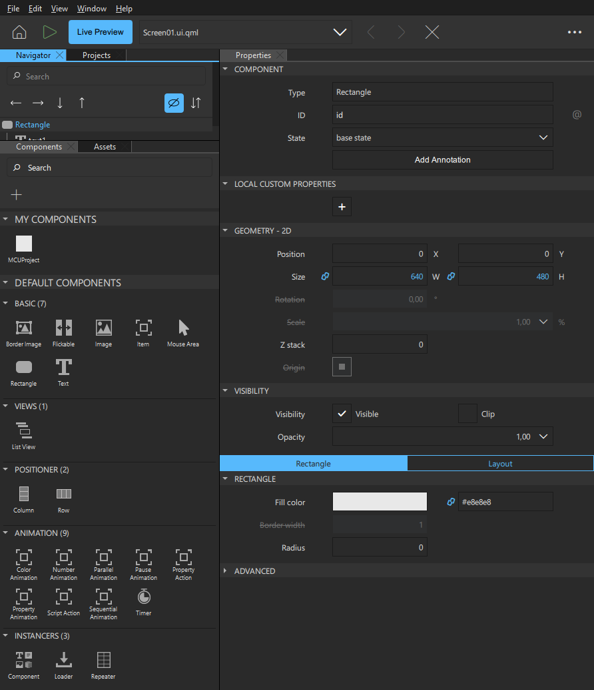

Creating UIs for MCUs
As a technical artist or a designer, you can use specialized UI design tools, such as Adobe Photoshop, Sketch, or Figma, to create the original UI design files for your MCU application. After the initial design work, export your design from the design tools, and import your 2D UI design assets into Qt Design Studio, which can convert them into code for developers. For more information on managing the original assets created with specialized UI design tools, see Asset Creation with Other Tools.
Once your UI design assets are in Qt Design Studio, use it to wireframe your MCU application, to visualize its structure. To modify the look and feel of your UI further, utilize the preset UI components available in Qt Design Studio.
Using MCU Components
With Qt Design Studio, you can use subsets of components to create UIs for devices that are powered by microcontroller units (MCU). The subset of supported components depends on the Qt for MCUs version that you use for development.
To develop for MCUs, create an MCU project. Only the components available on MCUs are displayed in Components. Also, only a subset of properties is supported for the supported components. The properties that are not available on MCUs are marked in the Properties view with strikethrough text.

For more information on the supported views and features, see Qt Design Studio Features on MCU Projects.
For an example on how to create a UI that runs both on the desktop and on MCUs, see Washing Machine UI. For step-by-step instructions on how to use Qt Design Studio to design a UI for a specific MCU target device, see:
See also Specifying Component Properties.